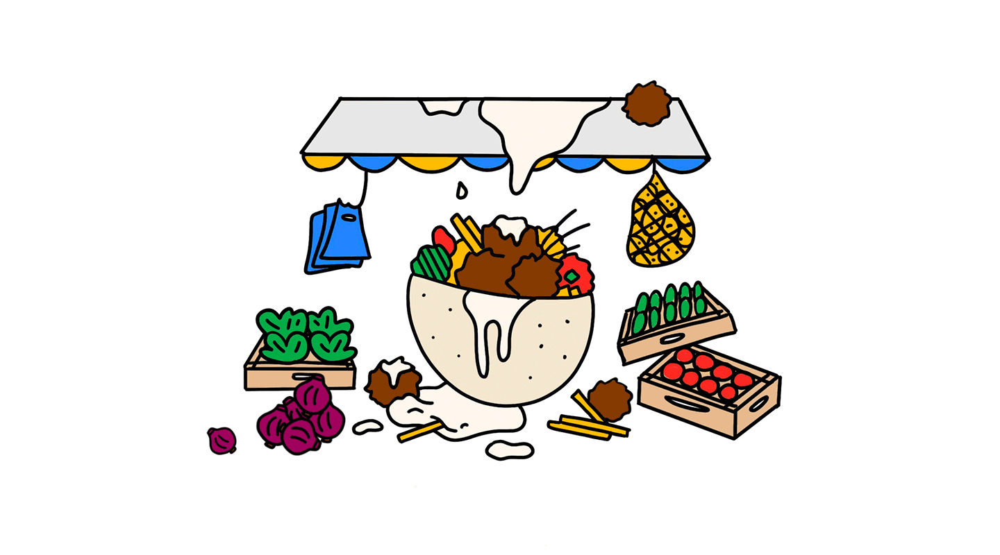
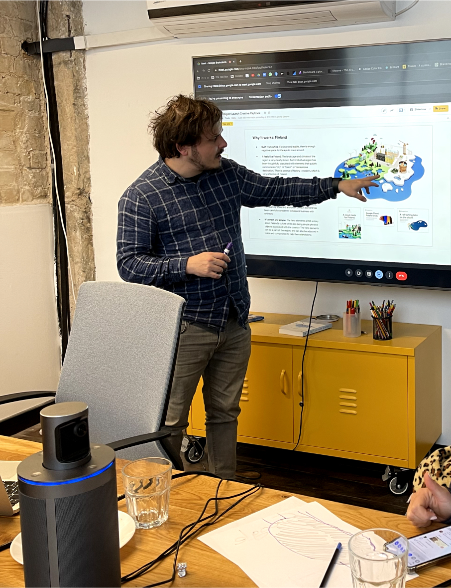

How to fit a whole country in 1080x1080
21.09.22 • 6 min read • By Yarden Givoni & Micha Brodoff

Tl;dr
Guts Agency made a huge 3D map of Israel for Google Cloud. Yarden, senior graphic designer, led big parts of this project. Here are her insights from the process:
- Tip 1: Start with a story.
- Tip 2: To be surprising, put ordinary things in unexpected places.
- Tip 3: Know your client deeply to push them to the edge, on-brand.
Yarden Givoni, senior designer at Guts, takes us behind the scenes of creating Google Cloud’s map of Israel, and gives us some creative nuggets of wisdom along the way.
Google Cloud launched a data center in Israel, and to celebrate, they asked Guts Agency to create a huge, playful map of Israel for their launch campaign.
Cue panic.
Cue panic.


The final map
What guided you in this project?
It was really important to us to make the map super Israeli. Meaning, a map without cliches and touristy stereotypes, that would make local Israelis grin. That’s why we filled the map with things like construction signs, trail markings, and the DBG statue. If you’re from here, you get it.
How did you pick elements then?
Well first, we started with a story concept – “Israeli Mix” – or, as we called it, the shakshuka. Israel may be small, but it’s a shakshuka of many different things. Sometimes, these things conflict or seem backwards, but that’s part of the country’s charm.
For example, Israel is a mix of cultures. It’s a mix of innovations, from agriculture to deep tech. It’s a mix of messy and put together, all at the same time. Work and play. Geography. An urban and rural mix.
I think that in creative work, starting with a story helps to unify your message and make it stronger. Whether it’s creating a single image, or an entire brand. So the symbols we chose all embody the charm of the story, this “mix”.
For example, Israel is a mix of cultures. It’s a mix of innovations, from agriculture to deep tech. It’s a mix of messy and put together, all at the same time. Work and play. Geography. An urban and rural mix.
I think that in creative work, starting with a story helps to unify your message and make it stronger. Whether it’s creating a single image, or an entire brand. So the symbols we chose all embody the charm of the story, this “mix”.

Sketches of the elements
“I think that in creative work, starting with a story helps to unify your message and make it stronger. Whether it’s creating a single image, or an entire brand.”
Tell me about that process.
With our story in mind, we compiled a huge list of Israeli elements, and then we spoke with Google probably 15 times before agreeing together on a final list. The final elements are all a wink to Israeli culture, food, economy, and entertainment, while avoiding religion, politics, and ideology, which can be controversial. The result is a map that I think is optimistic, surprising, and truly an Israeli mix.

Draft of the composition of the map
What do you mean “surprising?”
It’s not easy to take ordinary, everyday things, and make them surprising or interesting. We definitely got stuck creatively at first because we tried to overcomplicate the story.
For example, we wanted to create a literal startup garden in the middle of the map, complete with drip irrigation, a flash drive, and Waze navigating to a unicorn.
It looked great, and made sense, in our heads! But with feedback from Google and others, we realized that nobody except us understood it. While we spent hours and hours thinking about the map, most people will only see it for a few seconds, and that’s not enough time for them to ‘get’ the “startup garden” concept. And the confusion this caused distracted from other elements of the map.
For example, we wanted to create a literal startup garden in the middle of the map, complete with drip irrigation, a flash drive, and Waze navigating to a unicorn.
It looked great, and made sense, in our heads! But with feedback from Google and others, we realized that nobody except us understood it. While we spent hours and hours thinking about the map, most people will only see it for a few seconds, and that’s not enough time for them to ‘get’ the “startup garden” concept. And the confusion this caused distracted from other elements of the map.
“To be surprising, take everyday objects and put them somewhere unexpected.”
So simple is better?
It depends on the project, but in this case, yes. Sometimes, all you need to be surprising is to take everyday objects and put them somewhere unexpected. We took the everyday falafel and made it huge, floating in the sea. We put the grill in a traffic roundabout, and the finjan on top of a mountain.
It’s a super simple trick to add some wit, without trying too hard. And in the case of this project, it was a way for us to highlight the side of Google’s brand that is more human and humorous.
It’s a super simple trick to add some wit, without trying too hard. And in the case of this project, it was a way for us to highlight the side of Google’s brand that is more human and humorous.

The grill in a traffic roundabout

The hude everyday falafel floating in the sea
“The key is knowing your client deeply, pushing them to be gutsier, but always within the guidelines of their brand.”
Did any elements not make it in?
There were some elements that didn’t make the cut, even though they were very Israeli and we loved them. Like city cats, green trash cans, and a big fountain of tahini.
Our heads are always swimming with offbeat ideas – which is part of the fun of working at Guts, where this is encouraged – but not all of these ideas fit Google’s brand. The key is knowing your client deeply, pushing them to be gutsier, but always within the guidelines of their brand.
Our heads are always swimming with offbeat ideas – which is part of the fun of working at Guts, where this is encouraged – but not all of these ideas fit Google’s brand. The key is knowing your client deeply, pushing them to be gutsier, but always within the guidelines of their brand.

Startup garden (didn’t make the cut)
Hamsa and fan (didn’t make the cut)

School crossing guards (didn’t make the cut)
Tell me about the composition.
I sketched the elements and the map, and played around with the sizes, placement, and angle of everything until it looked just right.
With the composition, I wanted to guide the viewer's eye through the map, telling the shakshuka story with the beginning, middle, and end. I used perspective to draw the eye to focal points that act as simple, mini chapters within the larger story. Like the urban story, the agriculture story, and the fun-loving story. It’s a bit of an ode to this crazy, lovable country.
With the composition, I wanted to guide the viewer's eye through the map, telling the shakshuka story with the beginning, middle, and end. I used perspective to draw the eye to focal points that act as simple, mini chapters within the larger story. Like the urban story, the agriculture story, and the fun-loving story. It’s a bit of an ode to this crazy, lovable country.



You can see the map, along with the entire Google Cloud launch campaign, in ads and billboards across the country over the coming weeks.
Big thanks to the masters of 3D, Replica Works.